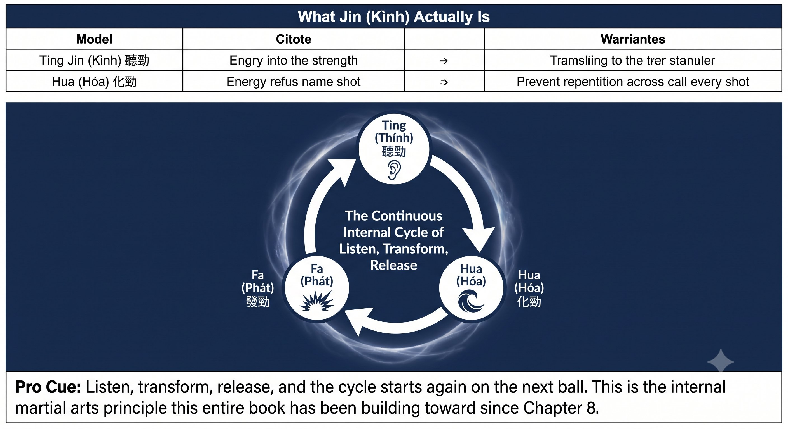

Chương 16: Jin
(Bản dịch tiếng Việt của Chapter 16 trong Sổ Tay Quần Vợt Thống Nhất)
Nghe, Hóa, Phát — Ba Biểu Hiện
Tensegrity là cấu trúc. Chu kỳ căng-rút là động cơ. Jin — kình — là thứ tạo ra ở đầu bên kia.
Kình không phải là sức mạnh cơ bắp. Đó là lực đàn hồi toàn thân được truyền qua một cấu trúc tensegrity.
— Henry Phạm

Hình 16.1
Jin (Kình) Thực Sự Là Gì
Trong võ thuật nội gia Việt Nam, nó được gọi là kình; trong tiếng Hán, là jin. Dù gọi thế nào, nó không phải là sức mạnh cơ bắp — đó là lực đàn hồi toàn thân được truyền qua một cấu trúc tensegrity. Có ba loại bạn cần trên sân quần vợt:
Quy Tắc
Một cú đánh dùng cơ bắp cho cảm giác nỗ lực ở cánh tay — bóng đi nhanh nhưng nhẹ, và đối thủ xử lý nó dễ dàng. Một cú đánh có kình cho cảm giác không tốn sức ở cánh tay, với nỗ lực nằm ở đôi chân và độ căng ở core thay vào đó — bóng đi nặng và xuyên thấu, đối thủ cảm nhận nó đẩy họ lùi lại.
1. Thính Kình — Kình Lắng Nghe (Bản Thể Cảm Cộng Fascia)
Đây là khả năng cảm nhận độ căng nằm ở đâu trong chính đường fascia của bạn, và trong chính trái bóng lúc tiếp xúc.

Hình 16.2
– Bạn cảm nhận được bóng trụ lại trên dây vợt khoảng 4 mili-giây qua fascia lòng bàn tay.
– Được huấn luyện bằng các bài shadow mắt nhắm, chân trần, và chuyển động chậm từ các chương trước.
– Nếu bạn không cảm nhận được mặt vợt đang chỉ về đâu mà không cần nhìn, bản thể cảm của bạn đang dựa dẫm vào thị giác — và điều đó giết chết Quiet Eye.
Mẹo Huấn Luyện
Drill: giữ tiếp xúc với mắt nhắm. Dùng trọn 10 giây để đi từ vung nạp đến vị trí tiếp xúc đóng băng, mắt đã đỗ. Cảm nhận từng centimet căng fascia đang xây dựng. Bài này huấn luyện thoi cơ chấp nhận độ căng mà không kích hoạt.
2. Hóa Kình — Kình Trung Hòa Hoặc Chuyển Hóa (Quiet Eye Cộng VOR)

Hình 16.3
Đây là khả năng hứng và chuyển hướng lực đến mà không chống lại nó.
– Một vung nạp ngắn trên một trái bóng nhanh chính là hóa kình — bạn không thêm lực vào, bạn chuyển hóa tốc độ của đối thủ.
– Nó đòi hỏi một cái đầu bất động và đôi mắt lặng yên; thiếu những điều đó, bạn sẽ chống lại lực bằng cơ bắp thay vào đó.
– Đây là lý do vì sao các tay vợt chuyên nghiệp làm cho những cú giao bóng nhanh trông thật dễ dàng — họ không bao giờ chống lại tốc độ đó, họ chuyển hướng nó.
Mẹo Huấn Luyện
Drill "hứng và chuyển hướng": đối tác đánh những cú drive nhanh. Bạn không hề có vung nạp — chỉ đặt góc và để trái bóng nảy lại. Cảm giác là bạn không đang đánh, bạn đang tiếp nhận và chuyển hướng. Đó chính là hóa kình.

Hình 16.4
3. Phát Kình — Kình Bùng Nổ (Sự Phản Hồi Của Fascia)
Đây chính là cú bật. Không có sự dừng lại để lấy đà — độ căng đi thẳng đến sự giải phóng.
– Đây chính xác là lý do vì sao không dừng ở cuối vung nạp lại quan trọng đến vậy. Trong một cấu trúc tensegrity, năng lượng đàn hồi đã lưu trữ sẽ tiêu tán thành nhiệt trong khoảng một giây nếu bạn giữ nó lại. Phát kình phải diễn ra tức thì.
– Cú push forehand là phát kình đi về phía trước. Cú saber là phát kình đi xuống dưới và về phía trước.
– Một cú đánh dùng cơ bắp cho cảm giác nỗ lực ở cánh tay — nhanh nhưng nhẹ, dễ cho đối thủ xử lý.
– Một cú đánh có kình cho cảm giác không tốn sức ở cánh tay, với nỗ lực nằm ở đôi chân và độ căng ở core — nặng, xuyên thấu, và đẩy đối thủ lùi lại.
Quy Tắc
Phát kình bằng một sự kéo dãn eccentric theo sau ngay bởi một sự giải phóng concentric tức thì. Không dừng lại. Dừng lại, và bạn đã tiêu tán mất năng lượng đàn hồi rồi.
Ba Loại Kình Trong Thực Chiến
Mẹo Huấn Luyện
Mọi cú đánh đều chứa cả ba loại. Chỉ có phát kình một mình, không có thính để cảm nhận và hóa để hứng lấy, chỉ khiến bạn thành một kẻ đập bóng — không phải một người chơi có kình.
Danh Sách Kiểm Tra Kình
THÍNH: CẢM NHẬN ĐỘ CĂNG. HÓA: HỨNG VÀ CHUYỂN HƯỚNG. PHÁT: GIẢI PHÓNG KHÔNG DỪNG.
– Trước cú vung: cảm nhận đường fascia căng ra từ chân đến tay (thính).
– Tại lúc bóng nảy: hứng lấy năng lượng đến thay vì chống lại nó (hóa).
– Tại tiếp xúc: bật — không dừng, không dùng cơ, chỉ giải phóng (phát).
– Nếu cẳng tay nóng rát, nghĩa là không có thính (không cảm nhận được độ căng), không có hóa (đã chống lại lực), và phát bị ép buộc.
– Nếu khuỷu tay đau, nghĩa là đường fascia đã gãy tại vai hoặc khuỷu tay, và kình đã rò rỉ ra ngoài.
– Huấn luyện với: shadow mắt nhắm (thính), hứng và chuyển hướng (hóa), và thả-rơi-đẩy (phát).
Chương Này Dẫn Đến Đâu
Chương này thiết lập kình như biến số trong hệ thống Q-V-ROOT-8-45-Impulse-Kình CORE. Chương 17 bao quát bước chân hư-thực, sự chuyển đổi giữa hư và thực. Chương 18 bao quát sự bén rễ. Chương 19 bao quát hệ thống forehand push. Chương 20 bao quát backhand saber một tay. Chương 21 bao quát backhand hai tay dạng lai.